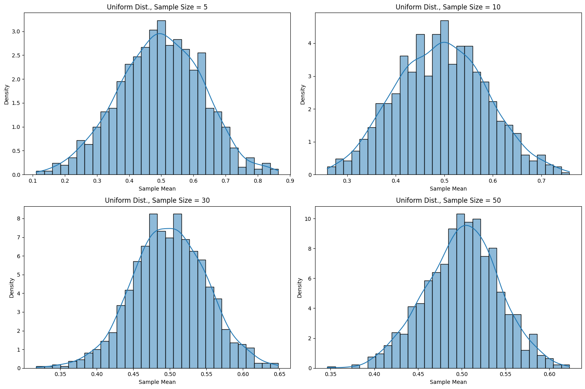
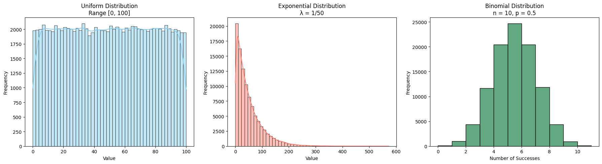

Central Limit Theorem: Simulation-Based Exploration
Theoretical Foundation
The Central Limit Theorem (CLT) states that, given a sufficiently large sample size, the sampling distribution of the mean of any independent random variable will be approximately normally distributed, regardless of the variable's original distribution.
Key Formula:
If $X_1, X_2, \dots, X_n$ are independent and identically distributed (i.i.d.) random variables with mean $\mu$ and variance $\sigma^2$, then the sample mean:
has an approximate normal distribution:
Analysis of Range
We explore the following distributions:
1. Uniform Distribution $\sim \mathcal{U}(a, b)$
- Mean: \(\mu = \frac{a + b}{2}\)
- Variance: \(\sigma^2 = \frac{(b - a)^2}{12}\)
2. Exponential Distribution $\sim \text{Exp}(\lambda)$
- Mean: \(\mu = \frac{1}{\lambda}\)
- Variance: \(\sigma^2 = \frac{1}{\lambda^2}\)
3. Binomial Distribution $\sim \text{Bin}(n, p)$
- Mean: \(\mu = np\)
- Variance: \(\sigma^2 = np(1 - p)\)
As $n$ increases, the sample mean distribution approaches:
Practical Applications
- Statistical inference: Confidence intervals and hypothesis tests rely on normal approximations.
- Quality control: Monitoring product variation via sample averages.
- Economics & finance: Portfolio returns modeled via CLT for large $n$.
Implementation with Python Simulation

1. Simulating Sampling Distributions
🔢 Objective: Simulate three types of populations to explore how their shapes influence the behavior of sample means in the Central Limit Theorem (CLT).

Python Code: CLT in Quality Control
 Diagram Explanation:
Diagram Explanation:
-
The histogram shows the distribution of the means of 1000 random samples, each with 30 product weights.
-
The red dashed line represents the average of these sample means (≈ population mean).
-
The bell-shaped curve demonstrates that sample means approximate a normal distribution, validating the Central Limit Theorem.
-
Explanation: With increasing samples, discrete distributions yield smooth, approximately normal sample mean distributions.
Conclusion
- The CLT holds for all tested distributions regardless of their shape.
- As sample size $n$ increases, the sample mean distribution converges to a normal distribution with mean $\mu$ and variance $\sigma^2/n$.
- Practical experiments confirm theoretical expectations, reinforcing the foundational importance of the CLT in statistical analysis.